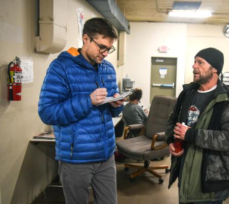

Jesse Tinsley
Meet Jesse Tinsley. As a certified drone pilot, this veteran Spokesman-Review photographer often can be seen capturing beautiful aerial photographs of our region. Sometimes though, the job requires getting down with the dogs.

- 
How you can support our local journalism:
One of the best and easiest ways to help keep our newsroom's local journalism alive is simply to subscribe. As our thank you, this link will take you to the most inexpensive subscription rates available. Unlimited access to our website and the e-edition of our newspaper starts at only $0.99 a month for the first two months. Home delivery and unlimited web access is as low as $1 a week.
Subscribeor call Customer Care at (509) 747-4422
The Spokesman-Review works with local and national foundations to help fund some of the journalism in our newspaper. What makes this partnership unique is that we are one of the only news organizations in the nation to then release the copyright of these stories publicly through Creative Commons. That means the journalism funded by our community is actually owned by our community, not by our newspaper. All of this money goes directly to offsetting the salaries of reporters in our newsroom and is tax deductible.
Donate